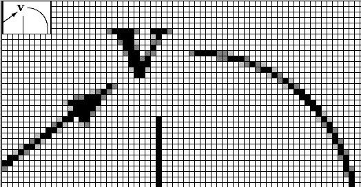

1996-02-29
Vd taksgarnituro, distribua garnituro, ilgarnituro.
Noto. «Aro da samspecaj aŭ samcelaj objektoj, kiuj prezentas unu tutaĵon, komplekson, sortimenton: (…) garnituro de skribotablo (skriboplato, inkujo, sorbilo, tondilo ktp); garnituro por la ungoj (fajliloj ktp)» [PIV1].
Angle: kit
France: kit, ensemble, jeu
Germane: Bausatz
Ruse: набор; комплект
1996-02-29
En komputila reto, komputilo havanta ne nur komunikadajn sed ankaŭ komputadajn funkciojn.
Rim. Kp retnodo, servilo, stacio; ĉefkomputilo, ilkomputilo.
Angle: host computer,
host
Ruse: главная ВМ, ГВМ
1996-02-29
Ĝeneralcela programada lingvo uzata kiel bazo por krei pli riĉan programlingvon kun specialaj esprimiloj por iu aplikkampo.
Noto. Kp indiĝena lingvo.
Angle: host language
France: langage hôte
Germane: Gastgebersprache
Ruse: включающий
язык
1996-02-29
Tradukilo kiu, rulate sur komputilo de unu speco (ilkomputilo, «gastiga komputilo»), produktas celprogramon por komputilo de alia speco (celkomputilo).
Noto. Vd la rimarkon sub kructradukilo.
Angle:
cross-compiler
Ruse: кросс-транслятор,
кросс-компилятор
1996-02-29
Metodo por elimini nekonatojn el lineara ekvaciaro, unue formulita de Gaŭso (1849).
Estu ekvaciaro S₀
aj1x₁ + … + ajnxn = bj, j=1,…,m
kie aji, bj estas anoj de kampo. Sen limigi la ĝeneralecon eblas supozi ke a11≠0. Tiam el ĉiu ekvacio ekde la dua (j=2,…,m) estas subtrahata la unua ekvacio, obligita per aj1/a11; tiel aperas la ekvaciaro S₁ farita el la diferencoj, el kiu estas eliminita la unua nekonato. La eliminado estas aplikata al la sekva(j) ekvaciaroj, ĝis restos sola nekonato aŭ nulaj koeficientoj ĉe ĉiuj nekonatoj.
Angle:
Gaussian elimination
Ruse: метод Гаусса, метод
исключений Гаусса
1998-08-05
1998-08-03
Formala priskribo de la sintakso de lingvo per aro da derivreguloj (kp kalkulo).

Angle: generative grammar
Ruse:
порождающая грамматика
1996-02-29
En Ada, modelo de proceduro, funkcio aŭ pakaĵo, servanta por generi respektivajn konkretajn programpecojn (procedurojn ktp), specifante konvenajn faktajn parametrojn. Interesa trajto de genera programpeco estas la eblo parametrizi subprogramon je datumtipoj — kiel en ekzempla pakaĵo (Genera programpeco en Ada). Por generi la aroperaciojn super la enumeracio Roma_cifero sufiĉas deklari
PACKAGE ciferaroj IS NEW aroj(universo=>Roma_cifero);
Generaj programpecoj en Ada estas realigataj simile al makrooj (tamen kun pli fidinda kontrolo, ol tiu de la antaŭtraktilo de C) kaj iom kompensas la mankon de procedurtipaj parametroj en Ada.
Angle: generic unit
Ruse:
родовая компонента
1996-02-29
Laŭ la arkitekturo, la elektronika elementa bazo kaj la uzmaniero oni distingas 5 generaciojn de komputiloj.
Angle: (computer) generation
Ruse:
поколение ВМ
1996-02-29
La ago generi.
Angle: generation
Ruse:
порождение, создание, генерация
1996-02-29
 Por
universala algebrao A, tia subaro
X⊆A, ke la malpleja subalgebrao en A, entenanta
X-on, estas A mem. Algebrao estas finie
generebla, se ĝi havas finian generantaron. Algebrao estas
cikla, se ĝi havas unuelementan generantaron.
Por
universala algebrao A, tia subaro
X⊆A, ke la malpleja subalgebrao en A, entenanta
X-on, estas A mem. Algebrao estas finie
generebla, se ĝi havas finian generantaron. Algebrao estas
cikla, se ĝi havas unuelementan generantaron.
(Laŭ [EKV], «Subaro T de vektora spaco V super K nomiĝas generantaro de V se ne ekzistas vera ‹t.e. propra — S.P.› subspaco V′ de V kiu entenas T.»)
Angle: generating set
Ruse:
порождающее множество
1996-02-29
Rim. En matematiko «generi» signifas «iel produkti»: movo de punkto generas linion; elementoj generas duonringon (vd generantaro).
Angle: generate; instantiate,
allocate
Ruse: порождать, генерировать,
отводить
1998-11-21
Noto. Kp signogenerilo. Cetere, «gener·iloj. Familiara vorto por generaj organoj» [PIV1].
Angle: generator
Ruse: генератор
1996-02-29
« Pref. uzata antaŭ unuoj
por signifi 1000000000 (miliardo); simb.: G» [PIV1].
En komputoscienco la nombra valoro de tiu obloprefikso kutime estas 230 = 1024³ = 1073741824, se temas pri memorkapacito; ekz-e 1 Gbajt = 1024 Mbajt, tamen la taktofrekvenco 1 GHz = 1000 MHz.
1996-02-29
Mezurunuo de memorkapacito, 1024 megabajtoj, 230=1024³=1073741824 bajtoj (mallonge Gbajt).
Angle: gigabyte
Ruse:
гигабайт
1996-02-29
Unu el la du Slavonaj alfabetoj, kiu dum longa tempo konservis kultan rolon en Kroatio. Probable ĝuste ĝin enkondukis s-ta Cirilo, kvankam tradicie oni atribuas al li la alian Slavonan alfabeton, kirilicon.
Angle: glagolitic alphabet
Ruse: глаголица
1996-04-06
 En rastruma grafiko, malakrigo de malglataĵoj, de la «ŝtupoj» en la kurbaj kaj diagonalaj linioj. Ekz-e oni povas bildigi la elstarantajn rastrumerojn en pli hela griza koloro; la grajneco iĝas malpli evidenta, la konturoj iĝas malpli klaraj. Vd ankaŭ punktismo.
Angle: anti-aliasing, smoothing
France: anti-crénelage, lissage
Germane: Antialiasing
Ruse: сглаживание
1996-08-25
Maniero prezenti nombron en la formo M×bE, kie M estas la mantiso (kun sia signumo); b, la bazo de nombrosistemo (kutime ĝi estas implica kaj en la maŝina prezento egalas potencon de 2, en la programadaj lingvoj, ekz-e en Paskalo, b=10); kaj E estas la eksponento. Tiu lasta en la maŝina prezento ofte havas formon de deŝovo, por ne apartigi la eksponentosignumon; ekz-e eksponento varianta en [−128..+127] estas prezentata adiciite kun 128, tiel ke la deŝovo varias en [0..255]. Por multaj aritmetikaj komandoj necesas normigi la glitpunktan prezenton.
Angle: floating(-point) representation
France: représentation en virgule flottante
Germane: Gleitkommadarstellung
Ruse:
представление чисел с плавающей точкой
1996-02-29
La projekto de Free Software Foundation (Fondaĵo pri libera/senpaga programaro), celanta krei ĉiesaĵon similan al Unikso.
Du gnuaĵoj, Emakso kaj la GNU-a C-tradukilo gcc iĝis tre popularaj en la mondo.
La GNU-a programaro elŝuteblas el multaj serviloj, ekz-e ftp.funet.fi/pub/gnu/ aŭ ftp://ftp.cnit.nsk.su/pub/gnu.
Vd http://www.cs.pdx.edu/~trent/gnu/ (neoficiala respondaro) kaj http://www.gnu.org/home.html, http://www.gnu.ai.mit.edu/ (oficiala TTT-paĝo de GNU).
1998-05-03
Novaĵlegilo enkonstruita en Emakson. Vd http://gnus.org/; la respondaro: http://www.ccs.neu.edu/software/contrib/gnus/; la forumo: news:gnu.emacs.gnus.
1997-11-22
Komputebla maniero kodi vortojn per naturaj entjeroj (kp aritmetikigo). Godela numerado de signaro S estas funkcio G: S*→ℕ havanta jenajn ecojn:
Unuafoje tian numeradon uzis K. Gödel (1906–78), kiu kodis la formulojn de entjeriko per naturaj entjeroj; tio ebligis al li esprimi la formulojn kaj la pruvlogikon de la entjeriko per ĝi mem. La paradoksoj de la memapliko rezultantaj el tia numerado sekvigas la Unuan teoremon de Gödel pri nekompleto.
Angle: Gödel numbering
Germane: Gödelnummerierung
Ruse: Гёделева
нумерация
1996-02-29
Vd sub Godela numerado.
Angle: Gödel number
Ruse: Гёделев
номер
1996-02-29
«… 2  (Pri skribmaniero) Karakterizita per multangulaj literoj:
gotika prestipo» [PIV1].
(Pri skribmaniero) Karakterizita per multangulaj literoj:
gotika prestipo» [PIV1].
Estis multaj gotikaj skribmanieroj kaj kompletaj tiparaj familioj (teksturo, rondgotiko, ŝvabaĥo), el kiuj nun oni ankoraŭ memoras pri frakturo. Vd tipara stilo.
Noto. En la Usona angla gothic ofte signifas «senserifa».
Angle:
blackletter, Gothic (type face)
Germane: gebrochene Schriften
Ruse:
готический
1996-02-29
Vd tipara grado.
Angle: degree; grade
Ruse: степень
1996-06-30
Matematika studo de grafeoj.
Angle: graph
theory
Ruse: теория графов
1996-02-29
Matematika strukturo, prezentebla per aro da punktoj (verticoj) ligitaj per linioj aŭ sagoj (eĝoj).
Noto. Nemulte gravas la koincido de graf- kun la nobeltitolo, pli malbonas, ke ĝi kaj grafi- povas kolizii kun la kvazaŭsufiksoj -graf(i) — ekz-e en terminograf(i)o. Etimologie ĝi devenas el la greka γραφή (desegno).
Angle:
graph, multigraph
Ruse: граф
1996-02-29
Ebliganta eneligon de la informoj en ajna grafika formo (kontraste al fikssignara): grafika terminalo, printilo.
Angle: graphic (display, device, mode)
Ruse: графический
1996-02-29
Angle: graphic character; linedraw character, drawing character
Ruse: псевдографическая литера
1996-02-29
Homa-komputila interfaco en kiu por dialoga eneligo anstataŭ vortoj estas uzataj bildoj. GUI-programo estas plenumata sub fenestrosistemo kaj ofertas diversajn fenestraĵojn: piktogramojn, butonojn, menuojn; la uzulo stiras ĝin movante la mus-kursoron inter tiuj objektoj, alklakante la bezonatajn opciojn.
Angle: graphical user interface, GUI
France: interface graphique
Germane: graphische Schnittshtelle, graphische
Benutzeroberfläche
Ruse: графический
интерфейс, средства графического
взаимодействия
1996-02-29
Desegno traktata aŭ farita per rimedoj de komputila grafiko.
Angle: image
Ruse: рисунок
(2) grafik·aĵ·o [PIV1, EKV], (ankaŭ:) grafo, grafio —
Prezento de ĵeto (funkcio) per aro da duopoj 〈argumento, rezulto〉:
G(f) = { 〈x,y〉 : y=f(x) }
Tia ara prezento kontrastas kun (ekz-e) difino per algoritmo aŭ ekvacio; vd funkcie ekvivalenta.
Noto. Angle, france (kaj nemalofte ankaŭ germane) por grafikaĵo kaj por grafeo oni uzas unu saman vorton. Pro tiu homonimio iuj okcidentanoj provas identigi (t.e. konfuzi) la du nociojn. Laŭ trafa rimarkigo de A. Shlafer, «kvankam la du nocioj havas ian komunaĵon, ĝi tamen ne estas multe pli granda ol la komunaĵo de grafikaĵo kun la nobeltitolo grafo» (kiu lasta ja implicas nobelan hierarkion, do arbon ktp)☺. La responda termino rusa, la germana «Schaubild» kaj la aŭtoritato de [EKV] ŝajnas sufiĉa bazo por preferi grafikaĵon. (Por la unuargumentaj reelaj funkcioj la duopoj ekvivalentas al ebenpunktoj, kio pravigas la metaforon.)
Angle: graph
France: graphe
Germane: Schaubild, Graph
Ruse: график
1996-02-29
Ajna rimedo por enigi, prezenti sur la ekrano de terminalo aŭ eligi grafikaĵon; povas temi pri rimedo aparata (desegnilo, ekrano) aŭ programa (grafika redaktilo, desegnilo).
Angle: graphics
Ruse: графическое средство
1996-09-29
Tiu branĉo de komputoscienco, kiu temas pri rimedoj por konstruado kaj transformado de bildoj (grafikaĵoj). Vd komposta grafiko, vektora grafiko, rastruma grafiko.
Angle:
graphics
Ruse: графика, машинная графика
1996-09-01
En rastruma grafiko, difekto de ekrana aŭ printa bildigo, kaŭzata de nesufiĉa distingivo (nesufiĉe fajna rastrumo), sekve de kiu kurba aŭ oblikva linio aperas evidente ŝtupeca. Por malpliigi grajnecon oni aplikas glatigon; por la tiparoj, ankaŭ poluron.
Noto. Laŭ PIV1,
grajneca. Prezentanta aspekton de aro da grajnoj: grajneca ledo, marmoro.
Angle: aliasing
France: crénelage
Ruse: зернистость,
ступенчатость
1996-10-13
Vd genera gramatiko.
Angle: grammar
Ruse: грамматика
1996-02-29
Vd ordo.
Angle: order of magnitude
Ruse: порядок величины
1996-02-29
Tipara fasono pli peza ol tiu uzata por la ĉefteksto. Ekz-e oni uzas la grasan fasonon
por emfazi la kapvortojn en la vortaroj kaj leksikonoj.
Rim. Iuj tiparaj familioj disponigas plurajn tiajn grasajn fasonojn; tiu uzata en kompostado de libroj kutime estas relative malpli peza (la plej pezajn oni uzas por specialaj efektoj en afiŝoj kaj similaj artaĵoj). Tial oni povus distingi tiajn pezogradojn uzante la vortojn graseta, grasega. Ŝajnas ke PIV1 elektis la vorton graseta por nomi la plej ordinaran specon (simile al la rusa tradicio); ni tamen opinias pli oportuna uzi la radikvorton por la ordinara speco, kaj laŭbezone precizigi per sufikso (ekz-e, grasega).
Angle: boldface
Ruse: полужирный шрифт
1999-07-14
Krajonforma plasta bastoneto, uzata kiel pikilo sur sentiva ekrano, precipe ĉe poŝkomputiloj; kun programo de grafika signorekono grifelo ankaŭ estas uzata por enigi tekstojn anstataŭ klavaro.
Angle: stylus, pen
France: stylet
Ruse: перо, стилус
2002-04-07
Simbolo de dramo, tragikomedio, «aciddolĉa mieno»; mienvinjeto esprimanta kvietan malplezuron, malŝaton, fion; en Askio imitata per :-/ (torda buŝo).
Angle: wry face
1996-02-29
Sur la IBM-aj klavaroj, ĉiu el kelkaj klavoj kiujn ne havis la tradicia tajpilo, precipe iu el la sagoklavoj kaj la operacisignoj de la nombra klavaro («la griza pluso» ktp).
Angle: grey key
Ruse: серая клавиша
1996-02-29
En Unikso, unika entjero el [0 … 32767] identiganta aron da uzantoj kun iuj komunaj atingorajtoj. Kp uzantonumero.
Angle: group identifier, group id, gid
1999-04-01
Duopo
(A,¤), kie A estas nevakua aro kaj ¤:A×A→A
estas tia operacio ke  En Unikso, aro da uzantoj
havantaj komunan grupnumeron kaj iuj komunajn atingorajtojn, kio ebligas al ili, ekz-e,
labori super komuna projekto aŭ faciligas administadon.
En Unikso, aro da uzantoj
havantaj komunan grupnumeron kaj iuj komunajn atingorajtojn, kio ebligas al ili, ekz-e,
labori super komuna projekto aŭ faciligas administadon.
Angle: group
Ruse: группа
1996-02-29
Aplika programaro por grupoj de uzuloj, laborantaj kune en reto. Grupvaro helpas kunordigi kaj administri ilian laboron.
Angle: groupware, teamware
France: synergiciel, logiciel de groupe de travail
Ruse: групповое программное
обеспечение
1996-10-18
Angle: GUI, graphical user interface
Ruse: ГИП,
графический интерфейс пользователя
1996-08-24